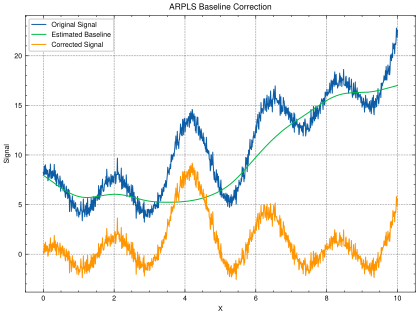

Readme
Table of Contents
1. Packages
The modules are loaded and we use excellent package SciencePlots for plots
import bline_correction as bc import matplotlib.pyplot as plt import numpy as np import scienceplots plt.style.use(['science','nature', 'grid'])
2. Sample data
A sample data is initialised with a ytrue and some noise to simulate a realistic data.
np.random.seed(42) x = np.linspace(0, 10, 1000) y_true = 2 * np.sin(2 * x) + 3 * np.cos(3 * x) baseline = 5 + 0.5 * x + 0.1 * x**2 y_noisy = y_true + baseline + np.random.normal(0, 0.5, x.shape)
3. Baseline correction using ARPLS
Asymmetrically Reweighted Penalized Least Squares (ARPLS) smoothing is an effective method for baseline correction to remove any baseline drifts. This technique iteratively estimates the noise level and adjusts the weights accordingly, using a generalized logistic function to differentiate between signal and baseline. By giving more weight to data points below the baseline and less weight to those above, ARPLS can accurately distinguish between the true signal and noise, thereby removing unwanted baseline drifts and variations. In the context of magnetometer measurment data, which often suffers from orientation-dependent errors and surrounding magnetic field gradients, ARPLS can help to isolate and correct for these issues, resulting in cleaner and more reliable data for further analysis. This method has been shown to outperform traditional baseline correction techniques, making it a valuable tool for preprocessing magnetometer data.
baseline_est = bc.adaptive_arpls(y_noisy, lam=1e7)
4. Plots
plt.figure(figsize=(7, 5)) plt.plot(x, y_noisy, label='Original Signal') plt.plot(x, baseline_est, label='Estimated Baseline') plt.plot(x, y_noisy - baseline_est, label='Corrected Signal') plt.legend() plt.title('ARPLS Baseline Correction') plt.xlabel('X') plt.ylabel("Signal")

Figure 1: ARPLS Baseline correction